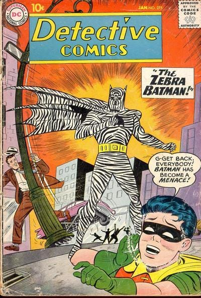

Where does he come from?
Batman was the brainchild of the artist Bob Kane and the writer Bill Finger, who collaborated on a new character for Detective Comics in 1938. Their first sketches were a long way from the Batman image most people are familiar with today: the first drawings gave him wings and red tights. A few drafts later, a Batman who looked more like the 2008 movie version was born. He was soon starring in his own self-titled comic.
Why was he such a success?
From the start, Batman was unlike other heroes. His rivals, Superman and Spider-Man, are festooned in the primary colours of the American flag, whereas Batman dresses in dark blues and blacks. And no other superhero has a story quite as bleak. When Bruce Wayne was a little boy, he watched his parents' deaths at the hands of Joe Chill, a heartless mugger, and vowed to dedicate the rest of his life to gaining revenge on the criminal underworld. Superman's arrival from another planet is kids' stuff in comparison. To quote the film director and comics geek Kevin Smith: "Batman is about angst; Superman is about hope."
How did he move from comics to the mainstream?
The first big fillip to the Dark Knight's career came in 1966, with the US TV series based on his comic-book adventures. It was a huge success for two years, and the POWs, WHAMs, and Holy Mackerel have an enduring ironic appeal. But the kitsch style, coupled with Adam West's goody-two-shoes performance dealt a near-fatal blow to the the comics, which were sullied for the hardcore aficionados and quickly forgotten by fans of the show. For the next 20 years, the series floundered through numerous relaunches without ever shaking off the high camp reputation of the series. Finally, just as Batman seemed to be on his last legs, Frank Miller wrote the four-issue mini-series The Dark Knight Returns, and changed everything.




Why was Miller's version so important?
As the cultural commentator Jabari Asim put it: "Miller revived what had been a declining character by plumbing his tangled psyche and exposing what he found there." Miller was fascinated by the horrors of the hero's childhood, and bears responsibility for the sense of Batman that most of us have today, as a uniquely downcast hero. That idea's influence on Hollywood, from the Batman series itself to the gloomy thrills of the Bourne movies, can be felt to this day.
What made this Batman different?
In Miller's version, Batman is a 50-year-old who comes out of retirement and has to battle the ravages of time on his body as much as the supervillains terrorising Gotham City. Tim Burton's 1989 Batman drew heavily on Miller's version, giving Michael Keaton's Batman the obsessive, dark personality Miller had imagined. It placed the same emphasis on the fact that, almost uniquely amongst superheroes, Bruce Wayne is not "super" at all, but an ordinary man who sometimes seems more like a vigilante than a hero, and who makes use of high technology, piles of money, his famous wits, and an awful lot of weight training. Critics saw the movie as the first about a superhero to treat the audience like grown-ups: typically, The Washington Post called it a "violent urban fairytale", "an enveloping, walk-in vision".
What happened next?
After a less successful sequel, Burton was dumped by studio executives in search of a more family-friendly director. Sure enough, Joel Schumacher's first effort, Batman Forever, starring Val Kilmer, enjoyed some box-office success; but the next time round, Batman and Robin was widely ridiculed for its garish, overblown style. George Clooney barely survived the mauling. Since then, there's been a renaissance in superhero movies, with Spider-Man and X-Men leading the way – both clearly inspired by Burton's original, darker vision. As a result, Batman himself came roaring back in the form of Christian Bale, in Christopher Nolan's 2005 revival Batman Begins. These days, comic-book movies are everywhere.